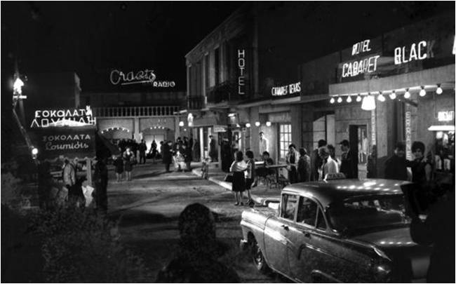

Η Τρούμπα του Πειραιά
Ίσως η πιο παρεξηγημένη περιοχή της νεότερης Ιστορίας του Πειραιά.
Η περιοχή πήρε το όνομά της από την αντλία (τρόμπα) που ήταν τοποθετημένη από το 1860 σε πηγάδι, στην αρχή της οδού Αιγέως, (σημερινής 2ας Μεραρχίας) και εφοδίαζε με νερό τα πλοία.
Η Τρούμπα τη δεκαετία του ’50 – ’60 έζησε τη λεγόμενη «χρυσή εποχή» η οποία κράτησε περίπου 20 χρόνια. Η αρχιτεκτονική των σπιτιών ευνόησε τη δημιουργία οίκων ανοχής αλλά και των περιβόητων καμπαρέ που άφησαν εποχή, όπως το «Τζων Μπουλ» και το «Μπλακ Κατ».
Παράλληλα η Τρούμπα διατήρησε τη λαική της κληρονομιά και μεγαλούργησε
μουσικά δημιουργώντας ένα μοναδικό στον κόσμο ήχο : το Ρεμπέτικο.
Οι μεγάλοι ρεμπέτες μεγαλούργησαν, ο Μάρκος Βαμβακάρης, ο Παπαϊωάννου, ο Κερομύτης και ο Νίκος ο Πουνέντης, έπαιξαν μουσική την οποία αργότερα θαύμασαν μουσικές διάνοιες όπως ο Jimmy Hendrix.
To 1967 απαγορεύτηκαν όλες οι δραστηριότητες στην περιοχή. Η επανάγνωση της ιστορίας σήμερα δίνει τα εύσημα στην περιοχή τόσο για την άνθιση και εδραίωση της λαϊκής μουσικής όσο και για την αντιστασιακή της δράση κατά τον
2ο Παγκόσμιο Πόλεμο. (βλ. βιβλιογραφία).